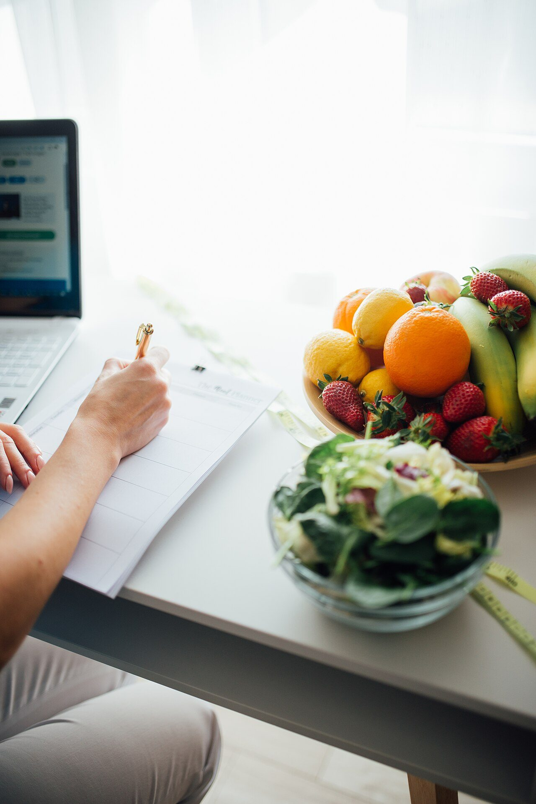
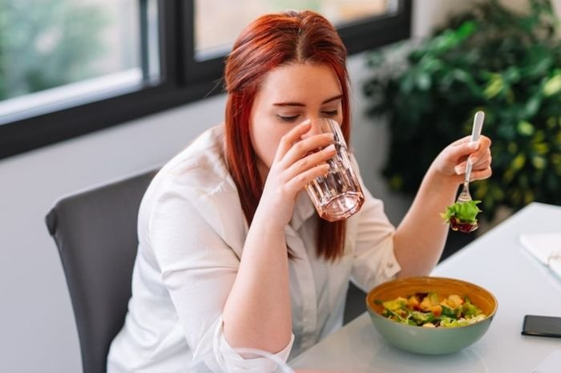

- Beranda
- Gizi Seimbang
Gizi Seimbang: mengisi piring dengan porsi yang benar
Gizi seimbang bukan soal makanan mahal, tetapi soal komposisi dan porsi. Panduan Isi Piringku dari Kemenkes dan angka acuan WHO memberi patokan yang bisa langsung dipakai saat makan.
Prinsip dasarnya: komposisi, bukan pantangan
Gizi seimbang berarti makanan yang kita makan mengandung energi, protein, lemak, vitamin, mineral, dan serat dalam jumlah yang cukup dan proporsional. Tidak ada makanan yang harus dihindari total, yang perlu diatur adalah seberapa sering dan seberapa banyak.
Kementerian Kesehatan RI menggambarkan komposisi ini lewat panduan Isi Piringku: dalam satu piring makan, setengah bagian diisi sayur dan buah, sedangkan setengah lainnya diisi makanan pokok dan lauk pauk berprotein.
Cara mudah mengingatnya: bayangkan piringmu dibagi empat. Dua bagian untuk sayur dan buah, satu bagian makanan pokok, satu bagian lauk berprotein. Air putih menjadi minuman utama.

Isi Piringku dalam praktik
Tabel berikut menerjemahkan panduan tersebut ke porsi sehari-hari. Ukuran "porsi" di sini bersifat perkiraan, karena kebutuhan energi setiap orang berbeda menurut usia, jenis kelamin, dan aktivitas.
| Kelompok | Bagian piring | Contoh | Perannya |
|---|---|---|---|
| Sayur | sekitar 1/3 piring | Bayam, kangkung, brokoli, wortel, labu siam | Sumber serat, vitamin, dan mineral; membantu rasa kenyang. |
| Buah | sekitar 1/6 piring | Pepaya, jeruk, pisang, jambu, semangka | Vitamin C, kalium, dan serat; lebih baik dimakan utuh daripada dijus. |
| Makanan pokok | sekitar 1/3 piring | Nasi, jagung, ubi, kentang, mi, roti gandum | Sumber karbohidrat sebagai bahan bakar utama tubuh. |
| Lauk pauk | sekitar 1/6 piring | Ikan, telur, ayam, tempe, tahu, kacang-kacangan | Protein untuk memperbaiki jaringan dan membentuk otot. |
| Minuman | di luar piring | Air putih | Menjaga cairan tubuh; bukan minuman manis. |
Sumber: Kementerian Kesehatan RI (ayosehat.kemkes.go.id, kampanye Isi Piringku dan GERMAS).
Angka acuan WHO untuk asupan harian
Selain komposisi piring, WHO memberi batas dan target asupan yang berlaku umum untuk orang dewasa sehat.
400 g
Sayur dan buah minimal per hari untuk usia di atas 10 tahun (anak 2–5 tahun sekitar 250 g, usia 6–9 tahun sekitar 350 g).
25 g
Serat pangan alami minimal per hari untuk dewasa, berasal dari biji-bijian utuh, kacang-kacangan, sayur, dan buah.
< 5 g
Garam per hari (setara kurang dari 2 g natrium atau sekitar satu sendok teh) untuk orang dewasa.
< 10%
Gula bebas dari total energi harian, sekitar 50 g atau 12 sendok teh untuk orang dengan berat badan sehat.
Sumber: WHO, Healthy diet fact sheet dan Salt reduction fact sheet.
Gula, garam, lemak: G4-G1-L5
Kementerian Kesehatan RI merangkum batas konsumsi harian menjadi G4-G1-L5: gula 4 sendok makan, garam 1 sendok teh, lemak 5 sendok makan per orang per hari.
Tantangannya, sebagian besar asupan itu tidak terasa "manis" atau "asin" karena datang dari makanan kemasan. Satu botol minuman manis bisa menghabiskan hampir seluruh jatah gula harian, dan seporsi mi instan plus saus sudah menyumbang garam dalam jumlah besar.
- Baca label. Perhatikan kolom gula dan natrium per sajian, lalu kalikan dengan jumlah sajian yang benar-benar kamu makan.
- Ganti minuman. Air putih, teh tanpa gula, atau infused water menggantikan minuman manis.
- Masak sendiri. Kamu bisa mengatur setengah garam tanpa mengurangi rasa, cukup dengan rempah dan jeruk nipis.
- Pilih camilan utuh. Buah, kacang tanpa garam, atau yoghurt tanpa gula lebih mengenyangkan daripada biskuit.

Menyusun menu satu hari
Contoh sederhana dengan bahan yang mudah ditemukan di pasar atau warung sekitar kampus.
| Waktu | Menu | Catatan gizi |
|---|---|---|
| Sarapan | Nasi/ubi, telur, tumis sayur, buah | Karbohidrat + protein + serat sejak pagi, membantu konsentrasi. |
| Makan siang | Nasi, ikan atau tempe, sayur bening, pepaya | Setengah piring sayur dan buah sesuai Isi Piringku. |
| Camilan | Buah atau kacang rebus | Menggantikan gorengan dan biskuit manis. |
| Makan malam | Nasi secukupnya, tahu/tempe, sayur, air putih | Porsi lebih ringan, tidak terlalu dekat dengan waktu tidur. |
Pertanyaan yang sering muncul
Apakah harus berhenti makan nasi?
Tidak. Nasi adalah sumber karbohidrat yang sah dan terjangkau. Yang perlu diatur adalah porsinya dan apa yang menemaninya. Nasi dengan sayur, lauk berprotein, dan buah jauh berbeda efeknya dengan nasi dengan gorengan dan saus manis.
Apakah makanan kemasan selalu buruk?
Tidak selalu. Yang penting adalah frekuensinya dan isi labelnya. Makanan kemasan dengan natrium dan gula rendah bisa menjadi pilihan praktis saat waktu terbatas.
Perlukah suplemen?
Untuk orang sehat dengan pola makan beragam, kebutuhan biasanya tercukupi dari makanan. Suplemen sebaiknya berdasarkan anjuran tenaga kesehatan, bukan tren di media sosial.
Bagaimana kalau makan di luar setiap hari?
Pilih warung yang menyediakan sayur, minta porsi nasi yang wajar, kurangi saus dan kuah berminyak, dan tetap minum air putih. Sedikit penyesuaian tetap berpengaruh.
Makan sudah benar, sekarang geraknya
Gizi dan aktivitas fisik bekerja bersama. Lanjut ke halaman aktivitas fisik untuk tahu berapa menit yang sebenarnya dibutuhkan.